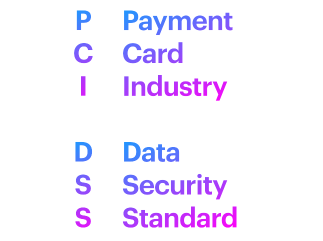

ว้าวุ่นไปกับ PCI DSS

ด้วยงานที่เราสร้างช่วงนี้ คือ Customer Data Integration Platform (CDI) มันมีอันต้องให้ไปแตะไปต้อง card data และก็คือ audit เข้าจร้า
ใดใดที่เราได้ไปแตะ card data แล้วนั้น เราต้องทำการพาตัวเองเข้า process control ค่ะ นั่นคือ PCI DSS
PCI DSS : Payment Card Industry Data Security Standard
เป็นมาตรฐานความปลอดภัยที่กำหนดขึ้นโดย 5 ค่าย (Visa, MasterCard, American Express, Discover และ JCB) โดยการตรวจสอบมาตรฐานนี้จะมีขึ้นทุกๆ ปีโดยผู้ตรวจประเมินอิสระ (Qualified Security Assessor หรือ QSA)
ตอนนี้ในใจเริ่มมีคำถามเหมือนกันไหมคะ ว่า แล้วถ้าเราไม่จ้างผู้ตรวจมาประเมินล่ะ?
ทาง security ที่เราปรึกษาอยู่ ได้ตอบไว้ว่า ทาง card brand ก็จะ delay การออก product ของเราไปค่ะ และล่าสุด PCI DSS 4.0 ระบุว่าอยากให้ compile standard ภายในปี 2025
ซึ่ง PCI DSS จะมีมาตรฐานที่ต้องปฏิบัติตามอยู่ 300 กว่าข้อค่ะ ใช่ค่ะ 300 กว่าข้อ ถ้าเป็นไปได้ เราควรจะหาทางเอาระบบเราออกจาก scope ค่ะ ที่ security แนะนำเราก็จะเป็น solution ที่ไม่ให้เราเก็บ card data เอาไว้ที่ระบบเรา หรือถ้าต้องเก็บก็ให้รับค่ามาแบบ encrypted และส่งต่อแบบ encrypted ไปอย่างนั้น นั่นก็อาจจะมีแค่บางระบบที่เป็นแค่ทางผ่านได้ แต่บางระบบก็จำเป็นต้องแกะออกมาดูเพื่อทำตาม requirement บางอย่าง ซึ่งทั้งหมดนั้น ขึ้นอยู่กับรายละเอียดที่จะต้องหาทางกันค่ะ
ขอให้ทุกท่านมีความสุขกับการพัฒนาซอฟต์แวร์ค่ะ
ขอบคุณค่ะ
File PCI DSS .PDF
https://www.commerce.uwo.ca/pdf/PCI-DSS-v4_0.pdf
Reference:
https://www.omise.co/th/what-is-pci-dss/thailand
https://stripe.com/th-us/guides/pci-compliance